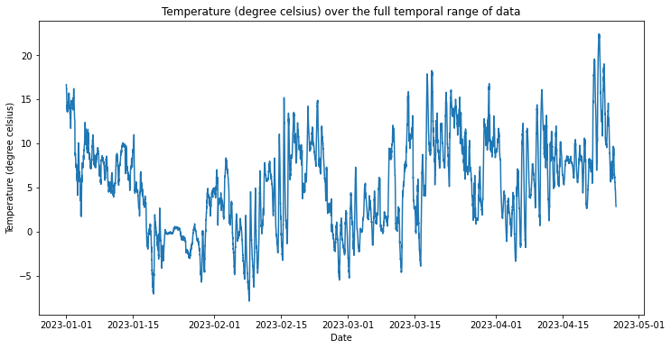
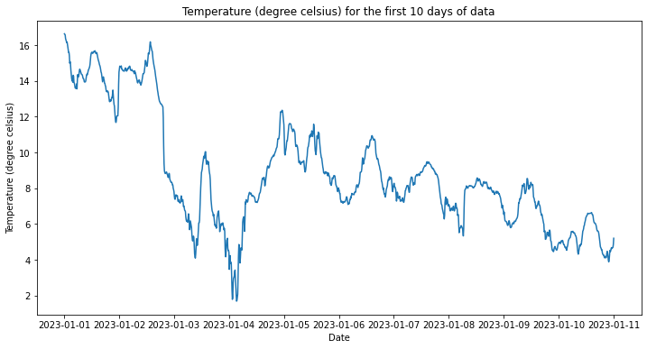
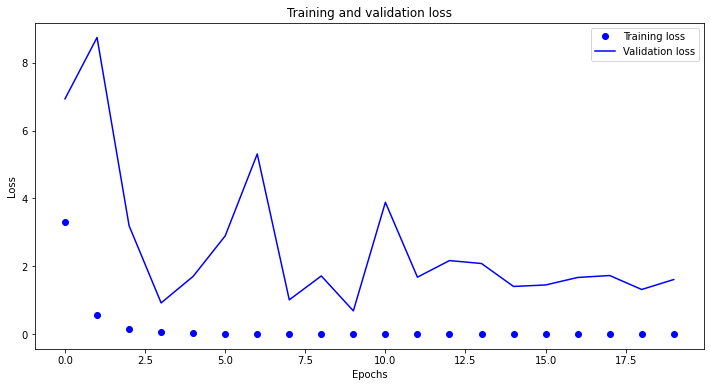
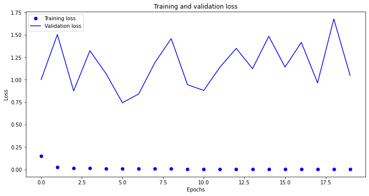
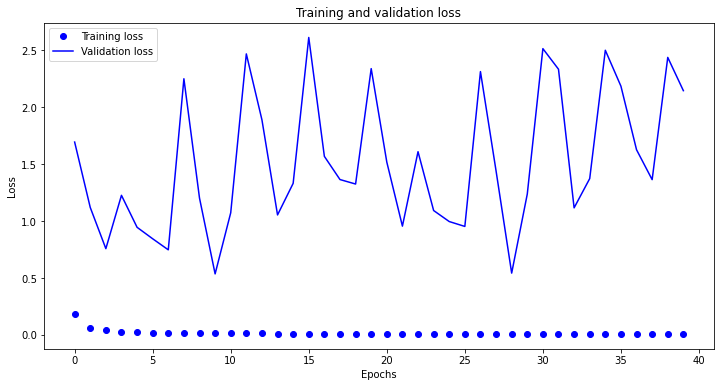
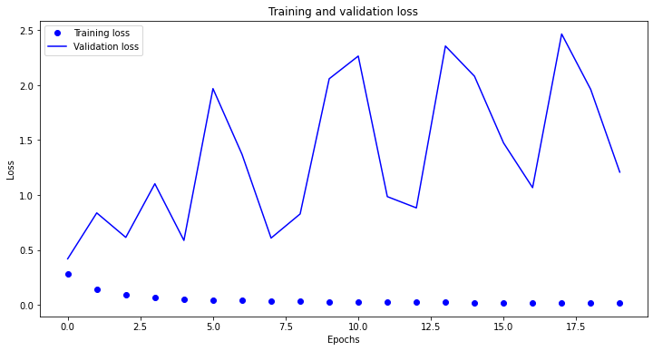
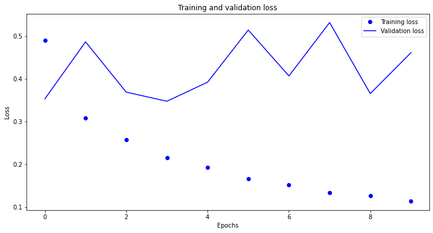
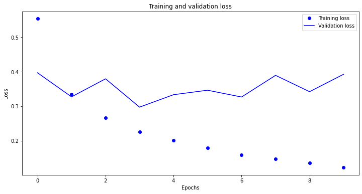
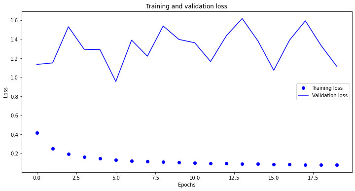

import pandas as pd
import numpy as np
import matplotlib.pyplot as plt
import tensorflow as tf
from keras.models import Sequential
from keras import layers
from tensorflow.keras.optimizers import RMSpropDeep Learning for Time Series (Chollet Book)
Import Libraries
Read in Data
Data collected is from 2023 to current.
df = pd.read_csv("mpi_roof.csv", encoding= 'unicode_escape')
f = open('mpi_roof.csv', encoding= 'unicode_escape')
data = f.read()
f.close()
lines = data.split('\n')
header = lines[0].split(',')
lines = lines[1:]
#df.head()Inspecting the Data
# print(df.columns)
# print("\n\n")
# print("Shape of data: ", df.shape)
print(header)
print(len(lines))['"Date Time"', '"p (mbar)"', '"T (degC)"', '"Tpot (K)"', '"Tdew (degC)"', '"rh (%)"', '"VPmax (mbar)"', '"VPact (mbar)"', '"VPdef (mbar)"', '"sh (g/kg)"', '"H2OC (mmol/mol)"', '"rho (g/m**3)"', '"wv (m/s)"', '"max. wv (m/s)"', '"wd (deg)"', '"rain (mm)"', '"raining (s)"', '"SWDR (W/m²)"', '"PAR (µmol/m²/s)"', '"max. PAR (µmol/m²/s)"', '"Tlog (degC)"', '"CO2 (ppm)"']
16587Parsing the Data
# convert all columns to float except date column
df.iloc[:, 1:] = df.iloc[:, 1:].apply(pd.to_numeric, errors='coerce').astype(float)
# convert date to datetime object (date frequency is 10 minutes)
df['Date Time'] = pd.to_datetime(df['Date Time'], format='%d.%m.%Y %H:%M:%S')
float_data = np.zeros((len(lines), len(header) - 1))
for i, line in enumerate(lines):
values = np.array([float(x) for x in line.split(',')[1:]])
if values.shape == (len(header) - 1,):
float_data[i, :] = values
else:
print(f"Skipping line {i+1} due to incorrect shape of values")Skipping line 16587 due to incorrect shape of valuesPlotting the temperature timeseries
plt.figure(figsize=(12, 6)) # Set the width to 12 inches and height to 6 inches
plt.plot(df['Date Time'], df['T (degC)']) # x, y encoding
plt.title("Temperature (degree celsius) over the full temporal range of data") # title
plt.xlabel("Date") # x-axis label
plt.ylabel("Temperature (degree celsius)") # y-axis label
plt.show()
Plotting the first 10 days of the temperature timeseries
plt.figure(figsize=(12, 6)) # Set the width to 12 inches and height to 6 inches
plt.plot(df['Date Time'][0:1440,], df['T (degC)'][0:1440,]) # x, y encoding
plt.title("Temperature (degree celsius) for the first 10 days of data") # title
plt.xlabel("Date") # x-axis label
plt.ylabel("Temperature (degree celsius)") # y-axis label
plt.show()
Normalizing the data
Preprocess the data by subtracting the mean of each timeseries and dividing by the standard deviation. I am going to use the first 8,000 timesteps as training data, so compute the mean and standard deviation only on this fraction of the data.
# get only numeric cols
#float_data = df.iloc[:, 2] # subset only temp data
# convert to numpy array
#float_data = float_data.to_numpy()
mean = float_data[:8000].mean(axis=0)
float_data -= mean
std = float_data[:8000].std(axis=0)
float_data /= stdGenerator yielding timeseries samples and their targets
def generator(data, lookback, delay, min_index, max_index,
shuffle=False, batch_size=128, step=6):
if max_index is None:
max_index = len(data) - delay - 1
i = min_index + lookback
while 1:
if shuffle:
rows = np.random.randint(
min_index + lookback, max_index, size=batch_size)
else:
if i + batch_size >= max_index:
i = min_index + lookback
rows = np.arange(i, min(i + batch_size, max_index))
i += len(rows)
samples = np.zeros((len(rows),
lookback // step,
data.shape[-1]))
targets = np.zeros((len(rows),))
for j, row in enumerate(rows):
indices = range(rows[j] - lookback, rows[j], step)
samples[j] = data[indices]
targets[j] = data[rows[j] + delay][1]
yield samples, targets
lookback = 1440 # observations go back 10 days
step = 6 # Observations will be sampled at one data point per hour.
delay = 144 # Targets will be 24 hours in the future.
batch_size = 128 # Number of samples per batch
train_gen = generator(float_data,
lookback=lookback,
delay=delay,
min_index=0, # We will only draw from the first 200,000 timesteps
max_index=8000, # We will use the first 8000 timesteps as training data
shuffle=True, # Shuffle the samples
step=step,
batch_size=batch_size)
val_gen = generator(float_data,
lookback=lookback,
delay=delay,
min_index=8001,
max_index=12000,
step=step,
batch_size=batch_size)
test_gen = generator(float_data,
lookback=lookback,
delay=delay,
min_index=10001,
max_index=None,
step=step,
batch_size=batch_size)
# How many steps to draw from val_gen in order to see the entire validation set
val_steps = (10000 - 8001 - lookback) // batch_size
# How many steps to draw from test_gen in order to see the entire test set
test_steps = (len(float_data) - 10001 - lookback) // batch_sizeComputing the common-sense baseline MAE
def evaluate_naive_method():
batch_maes = []
for step in range(val_steps):
samples, targets = next(val_gen)
preds = samples[:, -1, 1]
mae = np.mean(np.abs(preds - targets))
batch_maes.append(mae)
print(np.mean(batch_maes))
evaluate_naive_method()1.1648540583281701Training and evaluating a densely connected model
model = Sequential()
model.add(layers.Flatten(input_shape=(lookback // step, float_data.shape[-1])))
model.add(layers.Dense(32, activation='relu'))
model.add(layers.Dense(1))
model.compile(optimizer='rmsprop', loss='mse', metrics=['mae'])
history = model.fit_generator(train_gen,
steps_per_epoch=500,
epochs=20,
validation_data=val_gen,
validation_steps=val_steps)WARNING:tensorflow:From <ipython-input-11-1b894abb323d>:6: Model.fit_generator (from tensorflow.python.keras.engine.training) is deprecated and will be removed in a future version.
Instructions for updating:
Please use Model.fit, which supports generators.
Epoch 1/20
500/500 [==============================] - 7s 14ms/step - loss: 3.3082 - mae: 1.0409 - val_loss: 6.9385 - val_mae: 2.3070
Epoch 2/20
500/500 [==============================] - 7s 14ms/step - loss: 0.5480 - mae: 0.4810 - val_loss: 8.7483 - val_mae: 2.4272
Epoch 3/20
500/500 [==============================] - 7s 13ms/step - loss: 0.1636 - mae: 0.2631 - val_loss: 3.1957 - val_mae: 1.3233
Epoch 4/20
500/500 [==============================] - 7s 14ms/step - loss: 0.0491 - mae: 0.1479 - val_loss: 0.9195 - val_mae: 0.7544
Epoch 5/20
500/500 [==============================] - 7s 14ms/step - loss: 0.0174 - mae: 0.0923 - val_loss: 1.7029 - val_mae: 1.1284
Epoch 6/20
500/500 [==============================] - 7s 14ms/step - loss: 0.0091 - mae: 0.0695 - val_loss: 2.8960 - val_mae: 1.4790
Epoch 7/20
500/500 [==============================] - 7s 14ms/step - loss: 0.0067 - mae: 0.0608 - val_loss: 5.3124 - val_mae: 1.8979
Epoch 8/20
500/500 [==============================] - 7s 15ms/step - loss: 0.0055 - mae: 0.0555 - val_loss: 1.0103 - val_mae: 0.8226
Epoch 9/20
500/500 [==============================] - 7s 14ms/step - loss: 0.0048 - mae: 0.0526 - val_loss: 1.7143 - val_mae: 1.0772
Epoch 10/20
500/500 [==============================] - 7s 14ms/step - loss: 0.0044 - mae: 0.0499 - val_loss: 0.6847 - val_mae: 0.7273
Epoch 11/20
500/500 [==============================] - 7s 14ms/step - loss: 0.0041 - mae: 0.0485 - val_loss: 3.8869 - val_mae: 1.5257
Epoch 12/20
500/500 [==============================] - 7s 14ms/step - loss: 0.0039 - mae: 0.0470 - val_loss: 1.6784 - val_mae: 1.1016
Epoch 13/20
500/500 [==============================] - 7s 14ms/step - loss: 0.0037 - mae: 0.0458 - val_loss: 2.1678 - val_mae: 1.2272
Epoch 14/20
500/500 [==============================] - 7s 15ms/step - loss: 0.0035 - mae: 0.0445 - val_loss: 2.0812 - val_mae: 1.2809
Epoch 15/20
500/500 [==============================] - 7s 14ms/step - loss: 0.0035 - mae: 0.0446 - val_loss: 1.4047 - val_mae: 1.0091
Epoch 16/20
500/500 [==============================] - 8s 15ms/step - loss: 0.0034 - mae: 0.0438 - val_loss: 1.4485 - val_mae: 1.0286
Epoch 17/20
500/500 [==============================] - 7s 14ms/step - loss: 0.0033 - mae: 0.0427 - val_loss: 1.6694 - val_mae: 1.0636
Epoch 18/20
500/500 [==============================] - 7s 14ms/step - loss: 0.0031 - mae: 0.0418 - val_loss: 1.7274 - val_mae: 1.0034
Epoch 19/20
500/500 [==============================] - 7s 14ms/step - loss: 0.0031 - mae: 0.0418 - val_loss: 1.3152 - val_mae: 1.0230
Epoch 20/20
500/500 [==============================] - 7s 14ms/step - loss: 0.0031 - mae: 0.0414 - val_loss: 1.6085 - val_mae: 1.1461Plotting results
loss = history.history['loss']
val_loss = history.history['val_loss']
epochs = range(len(loss))
plt.figure(figsize=(12, 6)) # Set the width to 12 inches and height to 6 inches
plt.plot(epochs, loss, 'bo', label='Training loss') # x, y encoding
plt.plot(epochs, val_loss, 'b', label='Validation loss') # x, y encoding
plt.title('Training and validation loss') # title
plt.xlabel('Epochs') # x-axis label
plt.ylabel('Loss') # y-axis label
plt.legend()
plt.show()
Overfitting!
Training and evaluating a GRU-based model
model = Sequential()
model.add(layers.GRU(32, input_shape=(None, float_data.shape[-1])))
model.add(layers.Dense(1))
model.compile(optimizer='rmsprop', loss='mse', metrics=['mae'])
history = model.fit_generator(train_gen,
steps_per_epoch=500,
epochs=20,
validation_data=val_gen,
validation_steps=val_steps)
loss = history.history['loss']
val_loss = history.history['val_loss']
epochs = range(len(loss))
plt.figure(figsize=(12, 6)) # Set the width to 12 inches and height to 6 inches
plt.plot(epochs, loss, 'bo', label='Training loss') # x, y encoding
plt.plot(epochs, val_loss, 'b', label='Validation loss') # x, y encoding
plt.title('Training and validation loss') # title
plt.xlabel('Epochs') # x-axis label
plt.ylabel('Loss') # y-axis label
plt.legend()
plt.show()Epoch 1/20
500/500 [==============================] - 61s 123ms/step - loss: 0.1485 - mae: 0.2777 - val_loss: 1.0006 - val_mae: 0.8600
Epoch 2/20
500/500 [==============================] - 61s 121ms/step - loss: 0.0277 - mae: 0.1301 - val_loss: 1.5026 - val_mae: 1.0886
Epoch 3/20
500/500 [==============================] - 57s 113ms/step - loss: 0.0166 - mae: 0.0997 - val_loss: 0.8750 - val_mae: 0.7611
Epoch 4/20
500/500 [==============================] - 57s 114ms/step - loss: 0.0121 - mae: 0.0847 - val_loss: 1.3220 - val_mae: 1.1111
Epoch 5/20
500/500 [==============================] - 57s 114ms/step - loss: 0.0096 - mae: 0.0750 - val_loss: 1.0648 - val_mae: 0.8729
Epoch 6/20
500/500 [==============================] - 58s 115ms/step - loss: 0.0083 - mae: 0.0690 - val_loss: 0.7429 - val_mae: 0.7447
Epoch 7/20
500/500 [==============================] - 57s 114ms/step - loss: 0.0071 - mae: 0.0639 - val_loss: 0.8406 - val_mae: 0.7088
Epoch 8/20
500/500 [==============================] - 57s 114ms/step - loss: 0.0064 - mae: 0.0605 - val_loss: 1.1914 - val_mae: 1.0184
Epoch 9/20
500/500 [==============================] - 57s 114ms/step - loss: 0.0059 - mae: 0.0579 - val_loss: 1.4573 - val_mae: 0.9678
Epoch 10/20
500/500 [==============================] - 57s 114ms/step - loss: 0.0053 - mae: 0.0550 - val_loss: 0.9442 - val_mae: 0.8149
Epoch 11/20
500/500 [==============================] - 58s 115ms/step - loss: 0.0050 - mae: 0.0535 - val_loss: 0.8803 - val_mae: 0.7623
Epoch 12/20
500/500 [==============================] - 57s 113ms/step - loss: 0.0047 - mae: 0.0515 - val_loss: 1.1405 - val_mae: 0.9809
Epoch 13/20
500/500 [==============================] - 61s 122ms/step - loss: 0.0044 - mae: 0.0498 - val_loss: 1.3483 - val_mae: 0.9807
Epoch 14/20
500/500 [==============================] - 57s 114ms/step - loss: 0.0041 - mae: 0.0483 - val_loss: 1.1229 - val_mae: 0.8908
Epoch 15/20
500/500 [==============================] - 57s 115ms/step - loss: 0.0040 - mae: 0.0473 - val_loss: 1.4830 - val_mae: 1.1072
Epoch 16/20
500/500 [==============================] - 58s 116ms/step - loss: 0.0038 - mae: 0.0463 - val_loss: 1.1401 - val_mae: 0.8970
Epoch 17/20
500/500 [==============================] - 58s 117ms/step - loss: 0.0036 - mae: 0.0452 - val_loss: 1.4162 - val_mae: 1.0438
Epoch 18/20
500/500 [==============================] - 57s 114ms/step - loss: 0.0035 - mae: 0.0442 - val_loss: 0.9642 - val_mae: 0.7499
Epoch 19/20
500/500 [==============================] - 57s 115ms/step - loss: 0.0033 - mae: 0.0433 - val_loss: 1.6762 - val_mae: 1.2292
Epoch 20/20
500/500 [==============================] - 57s 115ms/step - loss: 0.0031 - mae: 0.0421 - val_loss: 1.0469 - val_mae: 0.7835
Training and evaluating a dropout-regularized GRU-based model
model = Sequential()
model.add(layers.GRU(32,
dropout=0.2,
recurrent_dropout=0.2,
input_shape=(None, float_data.shape[-1])))
model.add(layers.Dense(1))
model.compile(optimizer='rmsprop', loss='mse', metrics=['mae'])
history = model.fit_generator(train_gen,
steps_per_epoch=500,
epochs=40,
validation_data=val_gen,
validation_steps=val_steps)
loss = history.history['loss']
val_loss = history.history['val_loss']
epochs = range(len(loss))
plt.figure(figsize=(12, 6)) # Set the width to 12 inches and height to 6 inches
plt.plot(epochs, loss, 'bo', label='Training loss') # x, y encoding
plt.plot(epochs, val_loss, 'b', label='Validation loss') # x, y encoding
plt.title('Training and validation loss') # title
plt.xlabel('Epochs') # x-axis label
plt.ylabel('Loss') # y-axis label
plt.legend()
plt.show()Epoch 1/40
500/500 [==============================] - 98s 197ms/step - loss: 0.1813 - mae: 0.3224 - val_loss: 1.6950 - val_mae: 1.1441
Epoch 2/40
500/500 [==============================] - 99s 198ms/step - loss: 0.0611 - mae: 0.1933 - val_loss: 1.1202 - val_mae: 0.8083
Epoch 3/40
500/500 [==============================] - 96s 191ms/step - loss: 0.0395 - mae: 0.1555 - val_loss: 0.7581 - val_mae: 0.7379
Epoch 4/40
500/500 [==============================] - 98s 196ms/step - loss: 0.0298 - mae: 0.1344 - val_loss: 1.2269 - val_mae: 0.8905
Epoch 5/40
500/500 [==============================] - 96s 193ms/step - loss: 0.0244 - mae: 0.1215 - val_loss: 0.9458 - val_mae: 0.7802
Epoch 6/40
500/500 [==============================] - 97s 194ms/step - loss: 0.0209 - mae: 0.1119 - val_loss: 0.8450 - val_mae: 0.5979
Epoch 7/40
500/500 [==============================] - 99s 198ms/step - loss: 0.0184 - mae: 0.1042 - val_loss: 0.7478 - val_mae: 0.7290
Epoch 8/40
500/500 [==============================] - 121s 241ms/step - loss: 0.0170 - mae: 0.1002 - val_loss: 2.2514 - val_mae: 1.1580
Epoch 9/40
500/500 [==============================] - 111s 221ms/step - loss: 0.0155 - mae: 0.0954 - val_loss: 1.2028 - val_mae: 0.8694
Epoch 10/40
500/500 [==============================] - 102s 205ms/step - loss: 0.0146 - mae: 0.0923 - val_loss: 0.5362 - val_mae: 0.5012
Epoch 11/40
500/500 [==============================] - 94s 188ms/step - loss: 0.0137 - mae: 0.0891 - val_loss: 1.0734 - val_mae: 0.8566
Epoch 12/40
500/500 [==============================] - 98s 195ms/step - loss: 0.0130 - mae: 0.0869 - val_loss: 2.4699 - val_mae: 1.2973
Epoch 13/40
500/500 [==============================] - 97s 194ms/step - loss: 0.0125 - mae: 0.0849 - val_loss: 1.8903 - val_mae: 1.1717
Epoch 14/40
500/500 [==============================] - 101s 202ms/step - loss: 0.0119 - mae: 0.0829 - val_loss: 1.0545 - val_mae: 0.8176
Epoch 15/40
500/500 [==============================] - 100s 200ms/step - loss: 0.0115 - mae: 0.0814 - val_loss: 1.3321 - val_mae: 0.9002
Epoch 16/40
500/500 [==============================] - 99s 197ms/step - loss: 0.0113 - mae: 0.0809 - val_loss: 2.6144 - val_mae: 1.3228
Epoch 17/40
500/500 [==============================] - 98s 197ms/step - loss: 0.0110 - mae: 0.0793 - val_loss: 1.5693 - val_mae: 0.9867
Epoch 18/40
500/500 [==============================] - 98s 195ms/step - loss: 0.0108 - mae: 0.0785 - val_loss: 1.3655 - val_mae: 1.0527
Epoch 19/40
500/500 [==============================] - 100s 201ms/step - loss: 0.0105 - mae: 0.0771 - val_loss: 1.3261 - val_mae: 0.8819
Epoch 20/40
500/500 [==============================] - 101s 203ms/step - loss: 0.0102 - mae: 0.0765 - val_loss: 2.3404 - val_mae: 1.2042
Epoch 21/40
500/500 [==============================] - 98s 197ms/step - loss: 0.0100 - mae: 0.0756 - val_loss: 1.5188 - val_mae: 0.8714
Epoch 22/40
500/500 [==============================] - 98s 195ms/step - loss: 0.0099 - mae: 0.0753 - val_loss: 0.9560 - val_mae: 0.8192
Epoch 23/40
500/500 [==============================] - 97s 194ms/step - loss: 0.0098 - mae: 0.0743 - val_loss: 1.6102 - val_mae: 1.0234
Epoch 24/40
500/500 [==============================] - 96s 192ms/step - loss: 0.0096 - mae: 0.0739 - val_loss: 1.0933 - val_mae: 0.8295
Epoch 25/40
500/500 [==============================] - 103s 206ms/step - loss: 0.0093 - mae: 0.0728 - val_loss: 0.9963 - val_mae: 0.6324
Epoch 26/40
500/500 [==============================] - 120s 240ms/step - loss: 0.0093 - mae: 0.0727 - val_loss: 0.9534 - val_mae: 0.8109
Epoch 27/40
500/500 [==============================] - 105s 210ms/step - loss: 0.0092 - mae: 0.0722 - val_loss: 2.3143 - val_mae: 1.1918
Epoch 28/40
500/500 [==============================] - 98s 195ms/step - loss: 0.0091 - mae: 0.0719 - val_loss: 1.4414 - val_mae: 0.9371
Epoch 29/40
500/500 [==============================] - 97s 194ms/step - loss: 0.0090 - mae: 0.0714 - val_loss: 0.5431 - val_mae: 0.5130
Epoch 30/40
500/500 [==============================] - 97s 194ms/step - loss: 0.0089 - mae: 0.0710 - val_loss: 1.2381 - val_mae: 0.9014
Epoch 31/40
500/500 [==============================] - 98s 196ms/step - loss: 0.0088 - mae: 0.0705 - val_loss: 2.5161 - val_mae: 1.3079
Epoch 32/40
500/500 [==============================] - 102s 204ms/step - loss: 0.0087 - mae: 0.0702 - val_loss: 2.3352 - val_mae: 1.2845
Epoch 33/40
500/500 [==============================] - 98s 196ms/step - loss: 0.0086 - mae: 0.0697 - val_loss: 1.1167 - val_mae: 0.8462
Epoch 34/40
500/500 [==============================] - 98s 195ms/step - loss: 0.0087 - mae: 0.0700 - val_loss: 1.3740 - val_mae: 0.9195
Epoch 35/40
500/500 [==============================] - 98s 196ms/step - loss: 0.0085 - mae: 0.0694 - val_loss: 2.5019 - val_mae: 1.2939
Epoch 36/40
500/500 [==============================] - 96s 192ms/step - loss: 0.0085 - mae: 0.0689 - val_loss: 2.1862 - val_mae: 1.1856
Epoch 37/40
500/500 [==============================] - 96s 192ms/step - loss: 0.0083 - mae: 0.0687 - val_loss: 1.6275 - val_mae: 1.1617
Epoch 38/40
500/500 [==============================] - 100s 199ms/step - loss: 0.0083 - mae: 0.0682 - val_loss: 1.3647 - val_mae: 0.8788
Epoch 39/40
500/500 [==============================] - 96s 193ms/step - loss: 0.0083 - mae: 0.0683 - val_loss: 2.4391 - val_mae: 1.2274
Epoch 40/40
500/500 [==============================] - 96s 192ms/step - loss: 0.0081 - mae: 0.0678 - val_loss: 2.1468 - val_mae: 1.0260
np.__version__'1.18.5'pd.__version__'1.0.5'tf.__version__'2.3.0'plt.figure(figsize=(12, 6)) # Set the width to 12 inches and height to 6 inches
plt.plot(epochs, loss, 'bo', label='Training loss') # x, y encoding
plt.plot(epochs, val_loss, 'b', label='Validation loss') # x, y encoding
plt.title('Training and validation loss') # title
plt.xlabel('Epochs') # x-axis label
plt.ylabel('Loss') # y-axis label
plt.legend()
plt.show()Training and evaluating a dropout-regularized, stacked GRU model
model = Sequential()
model.add(layers.GRU(32,
dropout=0.1,
recurrent_dropout=0.5,
return_sequences=True,
input_shape=(None, float_data.shape[-1])))
model.add(layers.GRU(64, activation='relu',
dropout=0.1,
recurrent_dropout=0.5))
model.add(layers.Dense(1))
model.compile(optimizer='rmsprop', loss='mse', metrics=['mae'])
history = model.fit_generator(train_gen,
steps_per_epoch=100,
epochs=20,
validation_data=val_gen,
validation_steps=val_steps)
loss = history.history['loss']
val_loss = history.history['val_loss']
epochs = range(len(loss))
plt.figure(figsize=(12, 6)) # Set the width to 12 inches and height to 6 inches
plt.plot(epochs, loss, 'bo', label='Training loss') # x, y encoding
plt.plot(epochs, val_loss, 'b', label='Validation loss') # x, y encoding
plt.title('Training and validation loss') # title
plt.xlabel('Epochs') # x-axis label
plt.ylabel('Loss') # y-axis label
plt.legend()
plt.show()Epoch 1/20
100/100 [==============================] - 53s 525ms/step - loss: 0.2816 - mae: 0.4151 - val_loss: 0.4194 - val_mae: 0.5361
Epoch 2/20
100/100 [==============================] - 50s 496ms/step - loss: 0.1417 - mae: 0.2975 - val_loss: 0.8372 - val_mae: 0.7590
Epoch 3/20
100/100 [==============================] - 47s 469ms/step - loss: 0.0932 - mae: 0.2411 - val_loss: 0.6143 - val_mae: 0.6953
Epoch 4/20
100/100 [==============================] - 48s 483ms/step - loss: 0.0662 - mae: 0.2029 - val_loss: 1.1028 - val_mae: 0.8367
Epoch 5/20
100/100 [==============================] - 53s 533ms/step - loss: 0.0526 - mae: 0.1798 - val_loss: 0.5868 - val_mae: 0.6374
Epoch 6/20
100/100 [==============================] - 46s 464ms/step - loss: 0.0439 - mae: 0.1653 - val_loss: 1.9691 - val_mae: 1.0835
Epoch 7/20
100/100 [==============================] - 53s 530ms/step - loss: 0.0391 - mae: 0.1540 - val_loss: 1.3701 - val_mae: 0.9941
Epoch 8/20
100/100 [==============================] - 48s 483ms/step - loss: 0.0341 - mae: 0.1444 - val_loss: 0.6082 - val_mae: 0.5803
Epoch 9/20
100/100 [==============================] - 46s 461ms/step - loss: 0.0315 - mae: 0.1384 - val_loss: 0.8278 - val_mae: 0.7506
Epoch 10/20
100/100 [==============================] - 45s 454ms/step - loss: 0.0283 - mae: 0.1309 - val_loss: 2.0586 - val_mae: 1.1490
Epoch 11/20
100/100 [==============================] - 45s 452ms/step - loss: 0.0261 - mae: 0.1250 - val_loss: 2.2654 - val_mae: 1.2910
Epoch 12/20
100/100 [==============================] - 45s 450ms/step - loss: 0.0246 - mae: 0.1211 - val_loss: 0.9855 - val_mae: 0.8084
Epoch 13/20
100/100 [==============================] - 45s 452ms/step - loss: 0.0240 - mae: 0.1195 - val_loss: 0.8830 - val_mae: 0.7486
Epoch 14/20
100/100 [==============================] - 45s 452ms/step - loss: 0.0224 - mae: 0.1153 - val_loss: 2.3569 - val_mae: 1.2924
Epoch 15/20
100/100 [==============================] - 47s 469ms/step - loss: 0.0209 - mae: 0.1116 - val_loss: 2.0818 - val_mae: 1.1255
Epoch 16/20
100/100 [==============================] - 48s 476ms/step - loss: 0.0202 - mae: 0.1095 - val_loss: 1.4745 - val_mae: 1.0982
Epoch 17/20
100/100 [==============================] - 46s 455ms/step - loss: 0.0200 - mae: 0.1084 - val_loss: 1.0673 - val_mae: 0.8180
Epoch 18/20
100/100 [==============================] - 50s 497ms/step - loss: 0.0182 - mae: 0.1031 - val_loss: 2.4665 - val_mae: 1.2997
Epoch 19/20
100/100 [==============================] - 46s 458ms/step - loss: 0.0180 - mae: 0.1027 - val_loss: 1.9616 - val_mae: 1.0383
Epoch 20/20
100/100 [==============================] - 45s 452ms/step - loss: 0.0176 - mae: 0.1013 - val_loss: 1.2085 - val_mae: 0.9367
plt.figure(figsize=(12, 6)) # Set the width to 12 inches and height to 6 inches
plt.plot(epochs, loss, 'bo', label='Training loss') # x, y encoding
plt.plot(epochs, val_loss, 'b', label='Validation loss') # x, y encoding
plt.title('Training and validation loss') # title
plt.xlabel('Epochs') # x-axis label
plt.ylabel('Loss') # y-axis label
plt.legend()
plt.show()Using bidirectional RNNs
Training and evaluating an LSTM using reversed sequences
from keras.datasets import imdb
from keras.preprocessing import sequence
from keras import layers
from keras.models import Sequential
max_features = 10000 # Number of words to consider as features
maxlen = 500 # Cuts off texts after this many words (among the max_features most common words)
(x_train, y_train), (x_test, y_test) = imdb.load_data(num_words=max_features)
x_train = [x[::-1] for x in x_train]
x_test = [x[::-1] for x in x_test]
x_train = sequence.pad_sequences(x_train, maxlen=maxlen)
x_test = sequence.pad_sequences(x_test, maxlen=maxlen)
model = Sequential()
model.add(layers.Embedding(max_features, 128))
model.add(layers.LSTM(32))
model.add(layers.Dense(1, activation='sigmoid'))
model.compile(optimizer='rmsprop',
loss='binary_crossentropy',
metrics=['acc'])
history = model.fit(x_train, y_train,
epochs=10,
batch_size=128,
validation_split=0.2)Downloading data from https://storage.googleapis.com/tensorflow/tf-keras-datasets/imdb.npz
17465344/17464789 [==============================] - 1s 0us/step
Epoch 1/10
157/157 [==============================] - 66s 423ms/step - loss: 0.4896 - acc: 0.7682 - val_loss: 0.3528 - val_acc: 0.8634
Epoch 2/10
157/157 [==============================] - 65s 412ms/step - loss: 0.3077 - acc: 0.8812 - val_loss: 0.4862 - val_acc: 0.8274
Epoch 3/10
157/157 [==============================] - 74s 469ms/step - loss: 0.2571 - acc: 0.9026 - val_loss: 0.3685 - val_acc: 0.8690
Epoch 4/10
157/157 [==============================] - 72s 459ms/step - loss: 0.2151 - acc: 0.9238 - val_loss: 0.3472 - val_acc: 0.8550
Epoch 5/10
157/157 [==============================] - 64s 408ms/step - loss: 0.1919 - acc: 0.9307 - val_loss: 0.3919 - val_acc: 0.8654
Epoch 6/10
157/157 [==============================] - 68s 431ms/step - loss: 0.1654 - acc: 0.9418 - val_loss: 0.5138 - val_acc: 0.8206
Epoch 7/10
157/157 [==============================] - 77s 490ms/step - loss: 0.1516 - acc: 0.9465 - val_loss: 0.4064 - val_acc: 0.8768
Epoch 8/10
157/157 [==============================] - 65s 415ms/step - loss: 0.1339 - acc: 0.9532 - val_loss: 0.5313 - val_acc: 0.8014
Epoch 9/10
157/157 [==============================] - 65s 414ms/step - loss: 0.1263 - acc: 0.9567 - val_loss: 0.3651 - val_acc: 0.8708
Epoch 10/10
157/157 [==============================] - 65s 416ms/step - loss: 0.1136 - acc: 0.9628 - val_loss: 0.4608 - val_acc: 0.8736loss = history.history['loss']
val_loss = history.history['val_loss']
epochs = range(len(loss))
plt.figure(figsize=(12, 6)) # Set the width to 12 inches and height to 6 inches
plt.plot(epochs, loss, 'bo', label='Training loss') # x, y encoding
plt.plot(epochs, val_loss, 'b', label='Validation loss') # x, y encoding
plt.title('Training and validation loss') # title
plt.xlabel('Epochs') # x-axis label
plt.ylabel('Loss') # y-axis label
plt.legend()
plt.show()
Training and evaluating a bidirectional LSTM
model = Sequential()
model.add(layers.Embedding(max_features, 32))
model.add(layers.Bidirectional(layers.LSTM(32)))
model.add(layers.Dense(1, activation='sigmoid'))
model.compile(optimizer='rmsprop',
loss='binary_crossentropy',
metrics=['acc'])
history = model.fit(x_train, y_train,
epochs=10,
batch_size=128,
validation_split=0.2)Epoch 1/10
157/157 [==============================] - 61s 388ms/step - loss: 0.5537 - acc: 0.7210 - val_loss: 0.3970 - val_acc: 0.8318
Epoch 2/10
157/157 [==============================] - 61s 391ms/step - loss: 0.3350 - acc: 0.8752 - val_loss: 0.3272 - val_acc: 0.8706
Epoch 3/10
157/157 [==============================] - 64s 407ms/step - loss: 0.2660 - acc: 0.9024 - val_loss: 0.3795 - val_acc: 0.8310
Epoch 4/10
157/157 [==============================] - 71s 450ms/step - loss: 0.2255 - acc: 0.9212 - val_loss: 0.2973 - val_acc: 0.8902
Epoch 5/10
157/157 [==============================] - 59s 373ms/step - loss: 0.2013 - acc: 0.9294 - val_loss: 0.3334 - val_acc: 0.8762
Epoch 6/10
157/157 [==============================] - 67s 427ms/step - loss: 0.1794 - acc: 0.9352 - val_loss: 0.3464 - val_acc: 0.8752
Epoch 7/10
157/157 [==============================] - 61s 386ms/step - loss: 0.1588 - acc: 0.9454 - val_loss: 0.3267 - val_acc: 0.8872
Epoch 8/10
157/157 [==============================] - 67s 427ms/step - loss: 0.1466 - acc: 0.9508 - val_loss: 0.3896 - val_acc: 0.8730
Epoch 9/10
157/157 [==============================] - 63s 401ms/step - loss: 0.1348 - acc: 0.9557 - val_loss: 0.3421 - val_acc: 0.8802
Epoch 10/10
157/157 [==============================] - 58s 366ms/step - loss: 0.1224 - acc: 0.9585 - val_loss: 0.3927 - val_acc: 0.8826loss = history.history['loss']
val_loss = history.history['val_loss']
epochs = range(len(loss))
plt.figure(figsize=(12, 6)) # Set the width to 12 inches and height to 6 inches
plt.plot(epochs, loss, 'bo', label='Training loss') # x, y encoding
plt.plot(epochs, val_loss, 'b', label='Validation loss') # x, y encoding
plt.title('Training and validation loss') # title
plt.xlabel('Epochs') # x-axis label
plt.ylabel('Loss') # y-axis label
plt.legend()
plt.show()
Training a bidirectional GRU
model = Sequential()
model.add(layers.Bidirectional(
layers.GRU(32), input_shape=(None, float_data.shape[-1])))
model.add(layers.Dense(1))
model.compile(optimizer='rmsprop', loss='mae')
history = model.fit_generator(train_gen,
steps_per_epoch=100,
epochs=20,
validation_data=val_gen,
validation_steps=val_steps)Epoch 1/20
100/100 [==============================] - 15s 154ms/step - loss: 0.4185 - val_loss: 1.1352
Epoch 2/20
100/100 [==============================] - 15s 147ms/step - loss: 0.2504 - val_loss: 1.1510
Epoch 3/20
100/100 [==============================] - 15s 147ms/step - loss: 0.1914 - val_loss: 1.5312
Epoch 4/20
100/100 [==============================] - 15s 148ms/step - loss: 0.1641 - val_loss: 1.2938
Epoch 5/20
100/100 [==============================] - 15s 148ms/step - loss: 0.1452 - val_loss: 1.2898
Epoch 6/20
100/100 [==============================] - 15s 148ms/step - loss: 0.1328 - val_loss: 0.9555
Epoch 7/20
100/100 [==============================] - 15s 148ms/step - loss: 0.1227 - val_loss: 1.3906
Epoch 8/20
100/100 [==============================] - 15s 147ms/step - loss: 0.1146 - val_loss: 1.2216
Epoch 9/20
100/100 [==============================] - 15s 146ms/step - loss: 0.1088 - val_loss: 1.5388
Epoch 10/20
100/100 [==============================] - 15s 146ms/step - loss: 0.1043 - val_loss: 1.3976
Epoch 11/20
100/100 [==============================] - 15s 147ms/step - loss: 0.0997 - val_loss: 1.3627
Epoch 12/20
100/100 [==============================] - 15s 147ms/step - loss: 0.0963 - val_loss: 1.1653
Epoch 13/20
100/100 [==============================] - 15s 147ms/step - loss: 0.0931 - val_loss: 1.4365
Epoch 14/20
100/100 [==============================] - 15s 147ms/step - loss: 0.0911 - val_loss: 1.6178
Epoch 15/20
100/100 [==============================] - 15s 148ms/step - loss: 0.0881 - val_loss: 1.3819
Epoch 16/20
100/100 [==============================] - 15s 148ms/step - loss: 0.0846 - val_loss: 1.0737
Epoch 17/20
100/100 [==============================] - 15s 148ms/step - loss: 0.0856 - val_loss: 1.3906
Epoch 18/20
100/100 [==============================] - 15s 150ms/step - loss: 0.0813 - val_loss: 1.5935
Epoch 19/20
100/100 [==============================] - 15s 147ms/step - loss: 0.0802 - val_loss: 1.3329
Epoch 20/20
100/100 [==============================] - 15s 149ms/step - loss: 0.0797 - val_loss: 1.1128loss = history.history['loss']
val_loss = history.history['val_loss']
epochs = range(len(loss))
plt.figure(figsize=(12, 6)) # Set the width to 12 inches and height to 6 inches
plt.plot(epochs, loss, 'bo', label='Training loss') # x, y encoding
plt.plot(epochs, val_loss, 'b', label='Validation loss') # x, y encoding
plt.title('Training and validation loss') # title
plt.xlabel('Epochs') # x-axis label
plt.ylabel('Loss') # y-axis label
plt.legend()
plt.show()